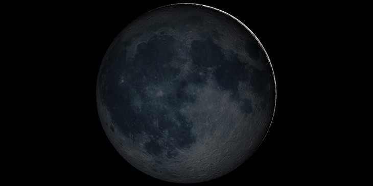
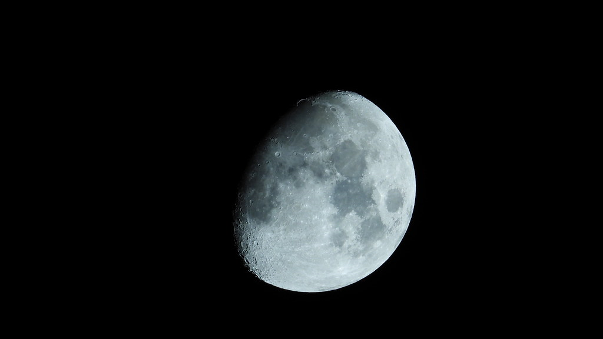
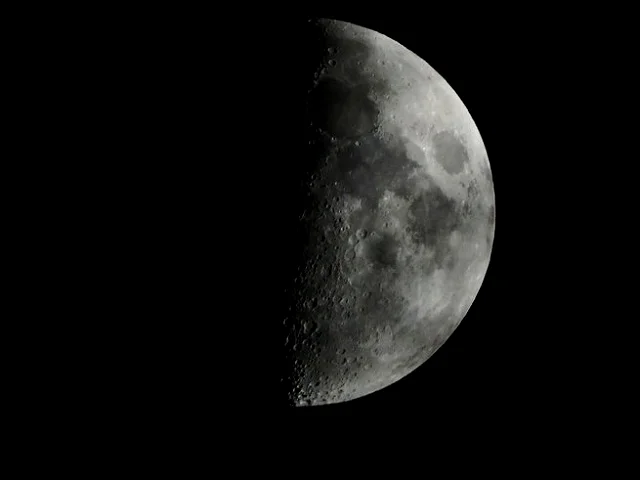

Fases da Lua
Para começar a falar sobre as fases da lua, primeiro temos que entender que a lua não possui brilho próprio
e é iluminada pelo sol.
Conforme a Lua se desloca em torno da Terra durante o mês, ela apresenta quatro aspectos diferentes que são
as fases da lua.
Lua Nova: Nessa fase a Lua não está sendo iluminada pelo Sol, por isso é marcada por pouca iluminosidade,
ela está no céu durante o dia, nasce aproximadamente as seis horas da manha e se põe aproximadamente as seis
horas da tarde
Lua Crescente: Nessa fase a Lua recebe luminosidade em apenas uma face, por isso consguimos observar apenas
1/4 dela, nasce aproximadamente ao meio dia e se põe aproximadamente à meia noite
Lua Cheia: Acontece quando o Sol ilumina totalmente a parte da Lua voltada para Terra, nesa fase ela começa
aproximadamente seis horas da tarde e se põe aproximadamente as seis horas da manha do dia seguinte
Lua Minguante: Essa fase é o ultimo estagio da fase da Lua, só conseguimos observar apenas uma face
iluminada, com que faz que ela se pareça com a letra C, nasce aproximadamente à meia-noite e se põe
aproximadamente ao meio-dia
|  |
Lua Nova
|
|
|  |
Lua Crescente
|
|
 |
Lua Cheia
|
|
|  |
Lua Minguante
|
|